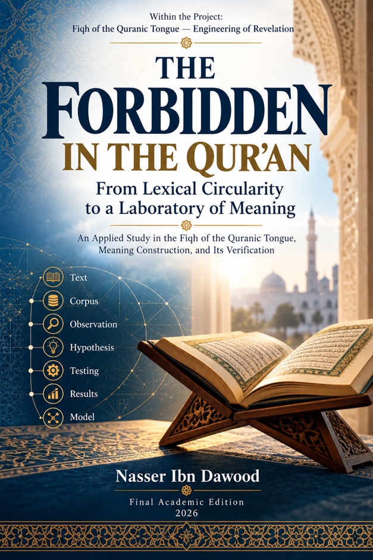

Nasser Ibn Dawood

Text extracted from the author-supplied Word edition; consult the original source.
Preparing the reader…
THE FORBIDDEN
IN THE QUR’AN
From Lexical Circularity to a Laboratory of Meaning
A Condensed Conceptual Adaptation
A practical study in the Fiqh of the Qur’anic Tongue,
the construction of meaning, and the testing of claims
Nasser Ibn Dawud
Project: Fiqh of the Qur’anic Tongue — Engineering of Revelation
Final Academic Edition — 2026
I. The Global Knowledge Manifesto
Knowledge is a universal right. The author firmly believes that wisdom should not be locked behind paywalls or language barriers.
Global Access Policy: All books in this library are available for free in multiple digital formats (PDF, HTML, DOCX, TXT).
The Digital Library: As of early 2026, the collection hosts 68 volumes (34 in Arabic and 34 in English), fully optimized for AI-assisted research and digital archiving.
Official Platforms: Main Website: nasserhabitat.github.io/nasser-books/
GitHub: nasserhabitat/nasser-books
II. Translator’s Note: The Bridge of Meaning
This English edition is a condensed conceptual adaptation. It is not a word-for-word translation, but rather an “extraction of essence.” It presents the core philosophical framework in accessible English, omitting the exhaustive linguistic debates and classical references found in the original Arabic text.
For the academic researcher: The original Arabic version remains the primary source for comprehensive linguistic analysis, detailed exegesis (Tafsir), and the complete bibliography.
Scope of this adaptation
This version preserves the architecture of the argument, the methodological safeguards, the principal test results, and the declared limits of the Arabic edition. It deliberately compresses technical records, repeated test tables, long corpus discussions, and the complete appendices. Open questions remain open; provisional candidates are not silently promoted into final definitions.
Contents
1. Why the Problem Is Not “What Does the Word Mean?”
2. From Selected Evidence to a Controlled Corpus
3. The First Laboratory: H-R-M and the Limits of “Prohibition”
4. Neighboring Concepts: Difference Without Forced Synonymy
5. Mathani as a Discovery Engine, Not a Second Scripture
6. From Interpretation to Falsification: The Book’s Testing Architecture
7. The Riba Laboratory: A Stress Test for the Method
8. Narrowing the Riba Model Without Forcing a Final Definition
9. Governance: What a Result May and May Not Be Used For
10. A Reader’s Protocol for Re-testing the Book
11. Final Synthesis: From Lexical Circularity to a Jurisprudence of Relations
12. Compact Glossary and Status Register
1. Why the Problem Is Not “What Does the Word Mean?”
This book begins with an epistemic problem rather than with a dictionary entry. A reader can easily start with a familiar definition, collect Qur’anic verses that appear to fit it, and then announce that the verses confirm the definition. The procedure looks textual, but the conclusion was already present at the beginning. The book calls this a form of lexical circularity: the inherited meaning directs the observation, and the directed observation is then used to prove the inherited meaning.
The alternative is not to reject dictionaries, grammar, morphology, or inherited scholarship. It is to change their rank. They may preserve usage, open possibilities, and provide descriptive tools, but they do not receive automatic authority to determine the Qur’anic concept in advance. The Qur’anic text, its resources, relations, contexts, surah structures, and cross-Qur’anic networks must be allowed to constrain or overturn the proposed meaning.
The governing question
Not: “What is the known meaning of this root?”
But: “What can be established from the Qur’anic resources before we decide what the root means?”
This shift changes the order of knowledge. The root first serves as an indexing device: it tells us which textual occurrences enter the field of study. Only later, after observation and testing, may we ask whether those occurrences share a semantic core. Shared letters do not prove shared function. Different forms do not prove total semantic separation either. Both unity and plurality must be tested rather than assumed.